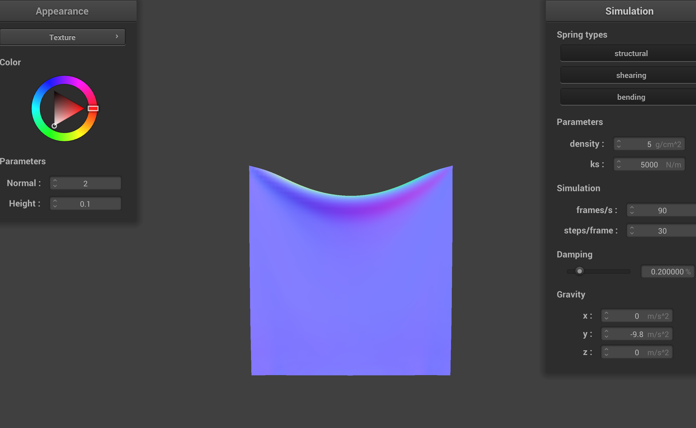
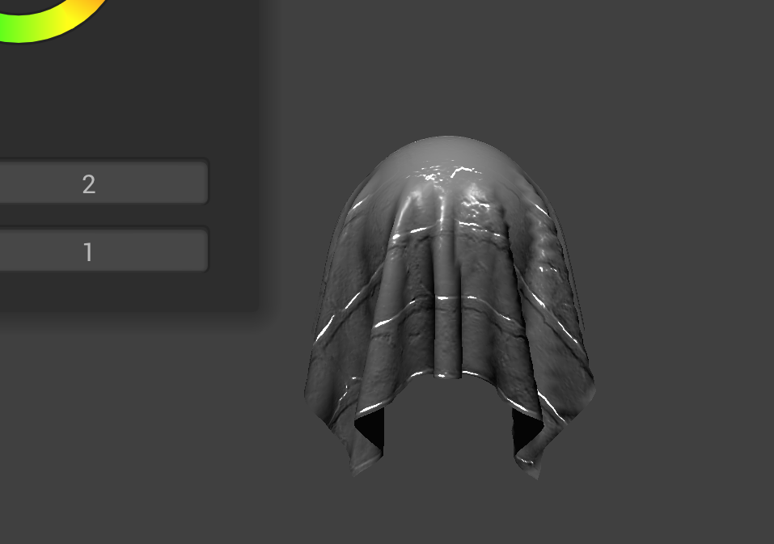

This homework simulates a cloth with point masses and springs along with collision handling. Simulates
handling collisions with objects such as a sphere and the cloth itself, along with
texture mapping and shaders.
Part 1: Masses and springs
Below are images of the masses and springs of our wireframe with different constraints.
pinned2 picture with structure of point masses and springs
wireframe without any shearing constraints
wireframe with only shearing constraints
wireframe with all constraints
Part 2: Simulation via numerical integration
Below are images simulating the cloth with different parameters. Looking at the cloth with
low ks, we can see many folds at the top compared to the high ks cloth. This shows the cloth is
more flexible and stretchable when the spring constant is lower. When simulating, we can see the cloth
stretch up and down more compared to the high ks. When the cloth has a lower density, the cloth doesn't bend on the sides
compared to the cloth with higher density. This is because the cloth is being stretched down more by gravity due to how dense
it is as well as how the cloth falls faster due to how heavy it is. When the cloth has low damping, the cloth would continue to bounce up and down frantically
due to losing less energy over time which means it keeps retaining most of its energy from the fall for it to go back up multiple times compared to high damping where the cloth
just falls like a hard paper without bouncing. Overall, compared to the original cloth, low ks means flexibibility, high ks, means more static, doesn't move as much,
low density leads to less mass on the cloth, high density drags the cloth down more due to how dense it is, low damping leads to more energy preserved after the fall, and high damping
loses all of its energy from the fall.
cloth with 100 ks
cloth with 10000 ks

cloth with 5 density
cloth with 35 density
cloth with low damping
cloth with high damping
Below is an image of the shaded cloth from pinned4 in its final resting state.
Shaded cloth of pinned4 in final resting state
Part 3: Handling collisions with other objects
For handling collisions with spheres and planes, we basically follow the directions in the spec. For spheres,
we get the vector from the point to the origin of the sphere and get the distance. If the distance is longer than the radius, then the
point is outside of the sphere so we do not have to worry about collisions. Otherwise, the point is inside or touching the sphere. From there
we calculate the tangent point by extending our vector from the origin to the surface of the sphere where the point should return back to. Using
the tangent point, we can get the correction vector such that the point's last position doesn't go into the sphere. We update the point's position to
be the sum of the last position and scaled correction vector due to friction. For colliding with a plane, we calculate the distance between the current and last position
of the point mass and the plane. Using the dot product of the vector and the normal, if it is positive, then it is above the plane, negative means below the plane.
Therefore, if multiplying both the last and current position of the point gives us a negative number, then we know that the point went through the plane and needs to be corrected.
Therefore we project the point mass position onto the plane to find the tangent point by finding the distance of the last position to the plane.
We get the correction vector by including a small offset for the small displacement and then calculate the new position similar as the sphere.
Below are the cloths resting on the sphere using different ks values. We can see from the images that a lower ks value gives it more flexibility and stretchness so we can see more folds to the side
of the sphere. Meanwhile, the higher the ks value, the less flexible and less folds are seen folding around the sphere. Below this is the shaded cloth
lying peacefully at rest on the plane.
shaded cloth in resting state using ks=500
shaded cloth in resting state using ks=5000
shaded cloth in resting state using ks=50000
shaded cloth lying at rest on the plane
Part 4: Handling self-collisions
For handling self collisions, we use a spatial map or spatial hashing to sort point mass pairs that are close to each other.
First we calculate the hash position to map each point to its 3D box by using the given equations in the spec and generate a corresponding hashcode to put into the map,
This process is done for all point masses. To test for self collision for a single point mass, we generate the hashcode to find its close neighbors and retrieve the nearby
points. We then loop through all points masses that aren't the input point and check if they are within 2 * thickness distance apart. If so, we compute a correction vector that
is applied to the point mass and we do this for all nearby points. The final correction vector is then the average of all of these pairwise correction vectors and scaled down by simulation steps.
Below we have a sample of the cloth falling on itself from the start to the end. Below this we simulate the folding on itself with different density and ks values. For a low density, the cloth produces wider and nice smooth folds compared
to the high density where the folds are smaller and bunched up do to how dense the cloth is. For low ks values, the cloth acts like the high density with crumpled folds and folds way too much compared to the higher ks fold
which has smoother and larger folds due to how unflexible it is.
cloth fall early stage
cloth fall initial self-collision stage
cloth fall ending at a more restful state
cloth fold with 5 density
cloth fold with 35 density
cloth fold with 500 ks
cloth fold with 50000 ks
Part 5: Shaders
A shader program is a colleciton of instructions that are ran on the GPU by telling how to process graphics data. In other words,
it runs the graphics pipeline which accelates frame rendering. This program contains both a fragment shader and vertex shader where it processes each vertex of a 3D model
into screen coordinates and passes along data such as position, normals, and tangents. Then this is sent to the fragment shader where it computes the final color of each pixel by
applying lighting models and other effects like Blinn-Phong. The Blinn-Phong model is broken into three parts, the ambient component, the diffuse component, and the specular component.
For the ambient component, it gives the object a level of brightness even when not directly lit by a light source. This prevents certain parts of the scene to be pitch dark.
The diffuse component simulates the scattering of light when hit by a rough surface by using Lambert's law where the intensity of illumination decreases as the angle increases between the normal and light vectors. The specular
component gives the scene more glossy and shiny texture. Blinn-Phong combines these components to bring about a more realistic image that has both lighting, glossiness, shine, and reflection.
Below are images of the cloth with diffeent components of Blinn-Phong as well as the combination of all three.
blinn-phong shader with only ambient
blinn-phong shader with only diffuse
blinn-phong shader with only specular
blinn-phone with all components
Below is the texture mapping shader of "Starry Night" I used as my custom texture.
texture mapping on the cloth
texture mapping on the sphere
Below are images of bump mapping and displacement mapping of the cloth and sphere with a new texture that was provided
in the code. For bump mapping, it creates an illusion of the details on objects such that it is perceived to have bumps and details since we
changed the normal vector. We see that it appears that the cloth has bumps from the texture of the cloth even though the sphere and cloth have no bumps. Compared
with displacement mapping, the positions of the vertices are adjusted such that it incorporates vertex position changes. This gives the object a more bumpy surface for both
the cloth and sphere providing a true visual of bumps making it more realistic. For the 16 resolution and 128 resolution, there weren't that many details that can be seen changed for the bump
mapping image due to no changes in the vertex positions. However, for displacement mapping, we can see that the 16 resolution is has fewer bumps and more smooth compared to the 128 resolution
where we can see a lot of little small bumps and more detailed bumps giving us a better overall realistic feel of the displacement mapping bumps.
bump mapping cloth
bump mapping on sphere
bump mapping cloth with -o 16 -a 16
bump mapping on sphere with -o 16 -a 16
bump mapping cloth with -o 128 -a 128

bump mapping on sphere with -o 128 -a 128
displacement mapping cloth
displacement mapping on sphere
displacement mapping cloth with -o 16 -a 16
displacement mapping on sphere with -o 16 -a 16
displacement mapping cloth with -o 128 -a 128
displacement mapping on sphere with -o 128 -a 128
Below are images of the mirror shader on the cloth and on the sphere.